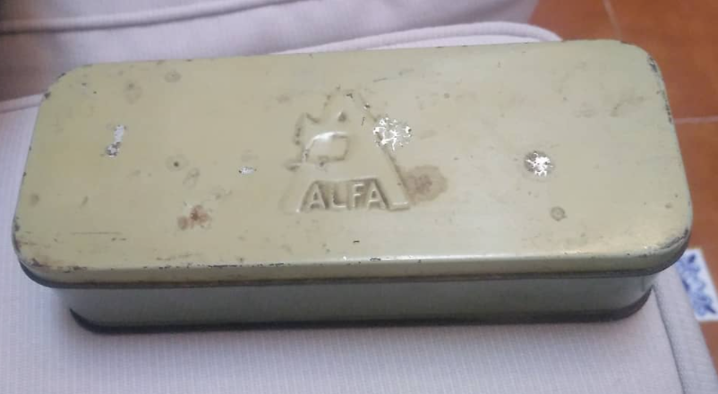
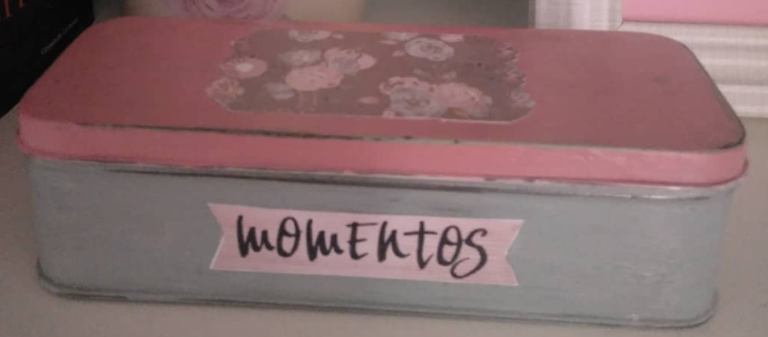

SOBRE MÍLas cositas de Mar es un proyecto realizado en la cuarentena por COVID-19 para mi entretenimiento personal.Mi nombre es Mar, comencé el proyecto Las cositas de Mar para mi entretenimiento y para llenar mi casa de vida y color con productos hechos a mano o bien re-decorados. Además, de vez en cuando hago cosillas para regalárselas a mis familiares. Acompáñame en este proyecto para inspirarte y llenarte de ideas o simplemente para echar un vistazo a lo que hago gracias a la página de mi hija. | Ejemplos |
|---|---|
|  | Esta caja de herramientas de costura es el antes, la caja ya estaba sucia y anticuada pero podía usarse con tan solo un cambio de estilo. |
|  | Aquí podemos ver el resultado final de la caja una vez limpiada, pintada y decorada, lista para un nuevo uso. |